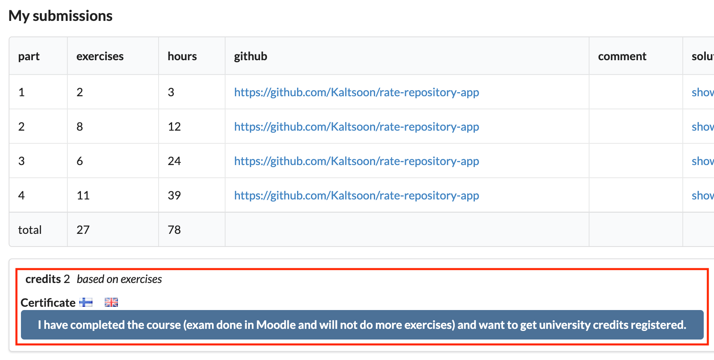

软件开发包括整个生命周期，从设想软件到编程，再到将软件发布给最终用户，甚至是维护软件。这一部分将介绍容器，一种在软件生命周期的后半部分使用的现代工具。
容器将你的应用封装成一个单一的包。然后，这个包将包括所有与应用有关的依赖性。因此，每个容器可以与其他容器隔离运行。
容器防止里面的应用访问设备的文件和资源。开发人员可以给所包含的应用访问文件的权限，并指定可用的资源。更准确地说，容器是操作系统级的虚拟化。最容易比较的技术是虚拟机（VM）。虚拟机被用来在一台物理机器上运行多个操作系统。他们必须运行整个操作系统，而容器则是使用主机操作系统运行软件。因此，虚拟机和容器之间的区别是，运行容器时几乎没有任何开销；它们只需要运行一个进程。
由于容器是相对轻量级的，至少与虚拟机相比，它们可以快速扩展。而且，由于它们隔离了内部运行的软件，它使软件几乎可以在任何地方以相同的方式运行。因此，它们是任何云环境或应用中超过少数用户的首选方案。
像AWS、谷歌云和微软Azure这样的云服务都支持多种不同形式的容器。这些服务包括AWS Fargate和Google Cloud Run，这两种服务都是以无服务器的方式运行容器--如果不使用应用容器，甚至不需要运行。你也可以在大多数机器上安装容器运行时间，自己在那里运行容器--包括你自己的机器。
所以容器在云环境中，甚至在开发过程中都可以使用。使用容器的好处是什么？这里有两个常见的场景。
Scenario 1: You are developing a new application that needs to run on the same machine as a legacy application. Both require different versions of Node installed.
你可能可以使用nvm、虚拟机或黑魔法来让它们同时运行。然而，容器是一个很好的解决方案，因为你可以在各自的容器中运行两个应用。它们是相互隔离的，不会相互干扰。
Scenario 2: Your application runs on your machine. You need to move the application to a server.
尽管应用在你的机器上运行得很好，但它就是不能在服务器上运行，这种情况并不罕见。这可能是由于某些依赖性的缺失或环境的其他差异。在这里，容器是一个很好的解决方案，因为你可以在你的机器和服务器上的同一执行环境中运行应用。这并不完美：不同的硬件可能是一个问题，但你可以限制环境之间的差异。
有时你可能会听到"在我的容器中工作"问题。这句话描述了这样一种情况：应用在你的机器上运行的容器中工作正常，但当容器在服务器上启动时就会中断。这句话是对臭名昭著的"在我的机器上工作"问题的一种戏谑，容器通常被 promise 解决这个问题。这种情况也很可能是一个使用错误。
About this part
在这一部分，我们关注的重点将不是JavaScript代码。相反，我们对执行软件的环境配置感兴趣。因此，练习可能不包含任何编码，应用可以通过GitHub提供给你，你的任务将包括配置它们。练习将被提交到一个GitHub仓库，其中将包括你在这部分所做的所有源代码和配置。
你将需要Node、Express和React的基本知识。只有核心部分，即1到5，需要在这部分之前完成。
Exercise 12.1
Warning
由于我们正走出我们作为JavaScript开发者的舒适区，这部分可能需要你绕道而行，在开始之前熟悉shell/命令行/命令提示符/终端。
如果你只使用过图形用户界面，从未接触过例如Linux或Mac上的终端，或者如果你在第一个练习中被卡住了，我们建议先做 "CS学习的计算工具 "的第一章节。https://tkt-lapio.github.io/en/。跳过 "SSH连接 "部分和练习11。否则，它包括了你在这里开始学习所需要的一切!
Exercise 12.1: Using a computer (without graphical user interface)
第一步：阅读警告标题下的文字。
第2步：下载这个仓库，并把它作为你在这部分的提交仓库。
第三步：运行curl http://helsinki.fi，并将输出保存到一个文件中。将该文件保存到你的仓库中，作为文件script-answers/exercise12_1.txt。目录script-answers已在上一步中创建。
Submitting exercises and earning credits
通过提交系统提交练习，就像在前面的部分一样。这一部分的练习被提交到其自己的课程实例。
在集装箱上完成这部分内容将得到1个学分。注意，你需要做所有的练习来获得学分或证书。
一旦你完成了练习并想获得学分，请通过练习提交系统让我们知道你已经完成了该课程。

你可以通过点击其中一个旗帜图标下载完成这部分的证书。旗帜图标与证书的语言相对应。
Tools of the trade
你所需要的基本工具在不同的操作系统中有所不同。
Installing everything required for this part
我们将从安装所需软件开始。安装步骤将是可行的障碍之一。由于我们正在处理操作系统级的虚拟化，这些工具将需要计算机上的超级用户权限。他们将有机会进入你的操作系统内核。
该材料是围绕Docker建立的，这是一套我们将用于容器化和容器管理的产品。不幸的是，如果你不能安装Docker，你可能无法完成这一部分。
由于安装说明取决于你的操作系统，你将不得不从下面的链接中找到正确的安装说明。注意，他们可能对你的操作系统有多个不同的选项。
现在这个令人头疼的问题有望得到解决，让我们确保我们的版本相符。你的版本可能比这里的数字高一点。
$ docker -v
Docker version 20.10.5, build 55c4c88
Containers and images
在开始使用容器时有两个核心概念，它们很容易相互混淆。
一个容器是一个图像的运行时实例。
以下两种说法都是真的。
- 图像包括所有的代码、依赖性和关于如何运行应用的指示
难怪它们很容易被混淆。
为了帮助混淆，几乎每个人都用容器这个词来描述两者。但你永远无法真正建立一个容器或下载一个，因为容器只在运行时存在。另一方面，图像是不可变的文件。由于它的不可更改性，在你创建了一个镜像之后，你不能再编辑它。然而，你可以使用现有的图像来创建一个新的图像，在现有的图像之上添加新的层。
烹饪比喻。
*容器是美味的食物。
Docker是最流行的容器化技术，并开创了今天大多数容器化技术的标准。在实践中，Docker是一套帮助我们管理镜像和容器的产品。这套产品将使我们能够利用容器的所有好处。例如，docker引擎将负责把称为镜像的不可变文件变成容器。
对于管理docker容器，还有一个叫做Docker Compose的工具，它允许人们在同一时间orchestrate（控制）多个容器。在这一部分，我们将使用Docker Compose来建立一个复杂的本地开发环境。在我们建立的最终版本的开发环境中，甚至将Node安装到我们的机器上都不再是一个要求了。
有几个概念我们需要去了解。但我们现在先跳过这些，先了解一下Docker!
让我们从命令docker container run开始，该命令用于在容器中运行镜像。该命令的结构如下。container run IMAGE-NAME，我们将告诉Docker从一个镜像中创建一个容器。该命令的一个特别好的特点是，即使要运行的镜像还没有下载到我们的设备上，它也可以运行一个容器。
让我们运行这个命令
§ docker container run hello-world
会有很多输出，但让我们把它分成多个部分，我们可以一起解读。这些行是由我来编号的，这样可以更容易地跟随解释。你的输出将不会有这些数字。
1. Unable to find image 'hello-world:latest' locally
2. latest: Pulling from library/hello-world
3. b8dfde127a29: Pull complete
4. Digest: sha256:5122f6204b6a3596e048758cabba3c46b1c937a46b5be6225b835d091b90e46c
5. Status: Downloaded newer image for hello-world:latest
因为在我们的机器上没有找到镜像hello-world，所以该命令首先从一个名为Docker Hub的免费注册中心下载它。你可以用你的浏览器在这里看到该镜像的Docker Hub页面。https://hub.docker.com/_/hello-world
消息的第一章节指出，我们还没有 "hello-world:最新 "的镜像。这揭示了关于图像本身的一些细节；图像名称由多个部分组成，有点像URL。一个图像名称的格式如下。
在这种情况下，3个缺失的字段默认为。
- index.docker.io/library/hello-world:update
第二行显示了组织名称，"library"，它将在那里获得图像。在Docker Hub的网址中，"library "被缩短为_。
第三和第五行只显示状态。但第4行可能很有趣：每个镜像都有一个基于构建该镜像的层的唯一摘要。在实践中，在构建镜像时使用的每个步骤或命令都会创建一个独特的层。Docker使用该摘要来识别一个镜像是相同的。当你试图再次拉取相同的镜像时，就会这样做。
所以，使用该命令的结果是拉取，然后输出关于**图像的信息。之后，状态告诉我们，确实下载了一个新版本的hello-world:fresh。你可以尝试用_docker image pull hello-world_来拉取镜像，看看会发生什么。
下面的输出是来自容器本身。它也解释了当我们运行_docker container run hello-world_时发生了什么。
Hello from Docker!
This message shows that your installation appears to be working correctly.
To generate this message, Docker took the following steps:
1. The Docker client contacted the Docker daemon.
2. The Docker daemon pulled the "hello-world" image from the Docker Hub.
(amd64)
3. The Docker daemon created a new container from that image which runs the
executable that produces the output you are currently reading.
4. The Docker daemon streamed that output to the Docker client, which sent it
to your terminal.
To try something more ambitious, you can run an Ubuntu container with:
$ docker container run -it ubuntu bash
Share images, automate workflows, and more with a free Docker ID:
https://hub.docker.com/
For more examples and ideas, visit:
https://docs.docker.com/get-started/
这个输出包含了一些新的东西供我们学习。Docker daemon是一个后端服务，它确保了容器的运行，我们使用Docker client来与daemon交互。现在我们已经与第一个镜像进行了交互，并从该镜像中创建了一个容器。在该容器的执行过程中，我们收到了这样的输出。
Exercise 12.2
这些练习中有一些不需要你写任何代码或配置到文件中。
在这些练习中，你应该使用script命令来记录你所使用的命令；自己尝试一下，用_script_开始记录，_echo "hello"_产生一些输出，_exit_停止记录。它将你的操作保存在一个名为 "typescript "的文件中。
如果_script_不起作用，你可以把你使用的所有命令复制粘贴到一个文本文件中。
Exercise 12.2: Running your second container
使用_script_来记录你所做的事情，将文件保存为script-answers/exercise12_2.txt。
hello-world的输出给了我们一个雄心勃勃的任务要做。做到以下几点
步骤1.用hello-world给出的命令运行一个Ubuntu容器
第1步将直接用bash连接到容器中。你将可以访问容器内的所有文件和工具。下面的步骤是在容器内运行的。
第2步。创建目录/usr/src/app。
第3步。创建一个文件/usr/src/app/index.js。
第4步。运行exit从容器中退出
谷歌应该能够帮助你创建目录和文件。
Ubuntu image
你刚才用来运行ubuntu容器的命令，docker container run -it ubuntu bash，包含了对之前运行的hello-world的一些补充。让我们看看 --help，以获得更好的理解。我将剪掉一些输出，这样我们就可以把注意力集中在相关部分。
$ docker container run --help
Usage: docker container run [OPTIONS] IMAGE [COMMAND] [ARG...]
Run a command in a new container
Options:
...
-i, --interactive Keep STDIN open even if not attached
-t, --tty Allocate a pseudo-TTY
...
这两个选项，或者说标志，-它_确保我们可以与容器互动。在这些选项之后，我们定义了要运行的镜像是_ubuntu。然后，我们有一个命令_bash_，当我们启动容器时在里面执行。
你可以试试ubuntu镜像可能会执行的其他命令。作为一个例子，尝试_docker container run --rm ubuntu ls_。ls_命令将列出目录中的所有文件，_--rm_标志将在执行后删除容器。通常情况下，容器是不会自动删除的。
让我们继续看我们的第一个ubuntu容器，它里面有index.js文件。自从我们退出后，该容器已经停止运行。我们可以用_container ls -a_列出所有的容器，-a（或--all）会列出已经退出的容器。
$ docker container ls -a
CONTAINER ID IMAGE COMMAND CREATED STATUS NAMES
b8548b9faec3 ubuntu "bash" 3 minutes ago Exited (0) 6 seconds ago hopeful_clarke
在寻址一个容器时，我们有两个选择。第一列中的标识符几乎总是可以用来与容器进行交互。另外，大多数命令都接受容器的名字，作为一种更人性化的工作方法。在我的例子中，容器的名字被自动生成为**"hopeful_clarke "**。
容器已经退出了，然而我们可以用启动命令再次启动它，该命令将接受容器的id或名称作为参数。start CONTAINER-ID-OR-CONTAINER-NAME。
$ docker start hopeful_clarke
hopeful_clarke
这个启动命令将启动我们之前的那个容器。不幸的是，我们忘了用标志_--interactive_来启动它，所以我们不能与它交互。
正如命令_container ls -a_所显示的那样，这个容器实际上已经启动并运行了，但我们无法与它交流。
$ docker container ls -a
CONTAINER ID IMAGE COMMAND CREATED STATUS NAMES
b8548b9faec3 ubuntu "bash" 7 minutes ago Up (0) 15 seconds ago hopeful_clarke
注意，我们也可以在不加标志_a_的情况下执行这个命令，只看那些正在运行的容器。
$ docker container ls
CONTAINER ID IMAGE COMMAND CREATED STATUS NAMES
8f5abc55242a ubuntu "bash" 8 minutes ago Up 1 minutes hopeful_clarke
让我们用_kill CONTAINER-ID-OR-CONTAINER-NAME_命令杀死它，然后再试试。
$ docker kill hopeful_clarke
hopeful_clarke
_docker kill_向进程发送一个信号SIGKILL，迫使它退出，这将导致容器的停止。我们可以用_container ls -a_来检查它的状态。
$ docker container ls -a
CONTAINER ID IMAGE COMMAND CREATED STATUS NAMES
b8548b9faec3 ubuntu "bash" 26 minutes ago Exited 2 seconds ago hopeful_clarke
现在让我们再次启动容器，但这次是以交互式模式。
$ docker start -i hopeful_clarke
root@b8548b9faec3:/#
让我们编辑文件index.js并添加一些JavaScript代码来执行。我们只是缺少编辑该文件的工具。目前，Nano将是一个很好的文本编辑器。安装说明是从谷歌的第一个结果中找到的。我们将省略使用sudo，因为我们已经是root。
root@b8548b9faec3:/# apt-get update
root@b8548b9faec3:/# apt-get -y install nano
root@b8548b9faec3:/# nano /usr/src/app/index.js
现在我们已经安装了nano，可以开始编辑文件了!
Exercise 12.3 - 12.4
Exercise 12.3: Ubuntu 101
使用_script_来记录你所做的事情，将文件保存为script-answers/exercise12_3.txt
用现在安装的nano编辑容器内的_/usr/src/app/index.js_文件，添加以下一行
console.log('Hello World')
如果你不熟悉Nano，你可以在聊天中或Google上寻求帮助。
Exercise 12.4: Ubuntu 102
使用_script_来记录你所做的事情，将文件保存为script-answers/exercise12_4.txt
在容器内安装Node，在容器内用_node /usr/src/app/index.js_运行索引文件。
安装Node的说明有时很难找到，所以这里是你可以复制粘贴的东西。
curl -sL https://deb.nodesource.com/setup_16.x | bash
apt install -y nodejs
你将需要在容器中安装_curl_。它的安装方式与你安装_nano_的方式相同。
安装完成后，确保你可以在容器内用命令运行你的代码
root@b8548b9faec3:/# node /usr/src/app/index.js
Hello World
Other docker commands
现在我们已经在容器中安装了Node，我们可以在容器中执行JavaScript了!让我们从容器中创建一个新的镜像。_commit CONTAINER-ID-OR-CONTAINER-NAME NEW-IMAGE-NAME_将创建一个新的镜像，包括我们所做的修改。你可以在这样做之前使用_container diff_来检查原始镜像和容器之间的变化。
$ docker commit hopeful_clarke hello-node-world
你可以用_image ls_列出你的镜像。
$ docker image ls
REPOSITORY TAG IMAGE ID CREATED SIZE
hello-node-world latest eef776183732 9 minutes ago 252MB
ubuntu latest 1318b700e415 2 weeks ago 72.8MB
hello-world latest d1165f221234 5 months ago 13.3kB
你现在可以按以下方式运行新的镜像。
docker run -it hello-node-world bash
root@4d1b322e1aff:/# node /usr/src/app/index.js
有多种方法可以达到相同的结论。让我们来看看一个更好的解决方案。我们将用_container rm_清理石板，以删除旧的容器。
$ docker container ls -a
CONTAINER ID IMAGE COMMAND CREATED STATUS NAMES
b8548b9faec3 ubuntu "bash" 31 minutes ago Exited (0) 9 seconds ago hopeful_clarke
$ docker container rm hopeful_clarke
hopeful_clarke
在你的当前目录下创建一个文件index.js，并在其中写入_console.log(''Hello, World')_。现在还不需要容器。
接下来，让我们完全跳过安装Node。在Docker Hub中有很多有用的Docker镜像供我们使用。让我们使用https://hub.docker.com/_/Node的镜像，它已经安装了Node。我们只需要选择一个版本。
顺便说一下，container run_接受--name_标志，我们可以用它来给容器起个名字。
$ docker container run -it --name hello-node node:16 bash
让我们为容器内的代码创建一个目录。
root@77d1023af893:/# mkdir /usr/src/app
当我们在这个终端的容器内时，打开另一个终端，使用_container cp_命令将文件从你自己的机器复制到容器内。
$ docker container cp ./index.js hello-node:/usr/src/app/index.js
现在我们可以在容器中运行_node /usr/src/app/index.js_。我们可以将其作为另一个新的镜像提交，但还有一个更好的解决方案。下一节将是关于像专家一样构建你的图像。